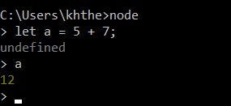
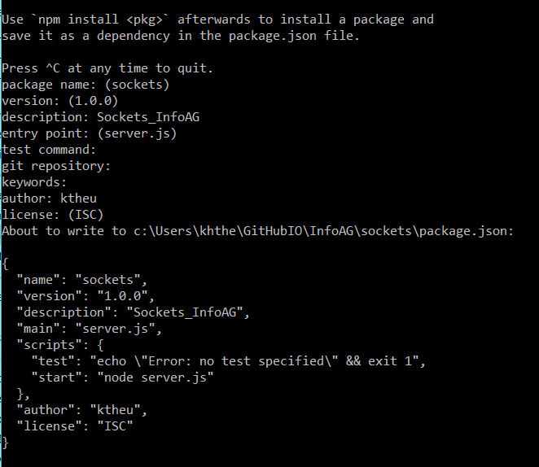
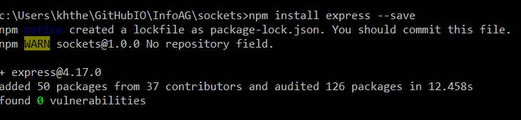

Daniel Shiffman: 4 Videos zum Thema, erstes davon hier
Javascript läuft im Browser. Node ist ein Programm, das die Javascript-Engine aus Chrome benutzt, um Javascript-Code außerhalb des Browsers laufen zu lassen (= Javascript auf einem Server).
Wenn Node installiert ist, können wir es als Programm aufrufen und Javascript-Befehle eingeben wie in der Chrome-Konsole. Mit Strg-C beenden wir ein Node-Programm.

Im Beispiel heißt der Arbeitsordner sockets. In der Kommandozeile in unserem Arbeitsordner rufen wir npm init auf und machen verschiedene Eingaben.
In der Kommandozeile rufen wir npm install express --save auf.
Anschließend rufen wir npm install socket.io --save auf.
Im Arbeitsordner erstellen wir einen Ordner public und ein File server.js. Im Ordner public erstellen wir die Files index.html und sketch.js Wir erhalten folgende Struktur:
sockets
public
index.html
sketch.js
server.js
Inhalt von server.js
let express = require('express');
let app = express();
let server = app.listen(3000);
app.use(express.static('public'));
let socket = require('socket.io');
let io = socket(server);
io.sockets.on('connection', newConnection);
function newConnection(socket) {
console.log("We have a new client: " + socket.id);
socket.on('mouse',
function (data) {
socket.broadcast.emit('mouse', data);
}
);
socket.on('disconnect',
function () {
console.log("Client has disconnected");
}
);
}
Inhalt von index.html
<!DOCTYPE html>
<html>
<head>
<meta charset="UTF-8">
<title>InfoAG</title>
<script src=" https://cdnjs.cloudflare.com/ajax/libs/socket.io/2.2.0/socket.io.js"></script>
<script type="text/javascript" src="https://cdnjs.cloudflare.com/ajax/libs/p5.js/0.8.0/p5.min.js"></script>
<script type="text/javascript" src="sketch.js"></script>
<style>
body {
padding: 20px;
}
</style>
</head>
<body>
</body>
</html>
Inhalt von sketch.js
let socket;
function setup() {
createCanvas(400, 400);
background(0);
//socket = io.connect('http://192.168.xxx.xx:3000');
socket = io.connect('localhost:3000');
socket.on('mouse',
function(data) {
fill(0,0,255);
noStroke();
ellipse(data.x, data.y, 20, 20);
}
);
}
function draw() {
// Nothing
}
function mousePressed() {
fill(255,0,0);
noStroke();
ellipse(mouseX,mouseY,20,20);
var data = {
x: mouseX,
y: mouseY
};
socket.emit('mouse',data);
}
In der Kommandozeile im Arbeitsverzeichnis starten wir den Server mit node server.js . Im Browser können wir mit localhost:3000 unseren Sketch sehen. Die Konsole meldet, dass sich ein Client connected hat. Wenn wir das Browserfenster duplizieren, können wir einen weitern Client connecten. Bei Mausklick werden die Kreise an alle Clients weitergegeben, die connected sind.
Wenn wir uns von einem anderen PC zum Server connected wollen, benötigen wir die IP-Adresse des Servers. Wir geben in der Kommandozeile den Befehl ipconfig ein
IPv4-Adresse . . . . . . . . . . : 192.168.123.45
Wir ersetzen die entsprechende Zeile in sketch.js
// socket = io.connect('localhost:3000');
socket = io.connect('http://192.168.123.45:3000');
Im Browser des anderen PCs können wir uns jetzt mit 192.168.123.45:3000 zu dem server connecten.
Ersetze sketch.js durch den folgenden Inhalt, um Tictactoe an zwei Clients zu spielen. In dem Beispiel sind ungültige Eingaben noch nicht abgefangen.
let rows = 3;
let cols = 3;
let grid = [];
let groesse = 100;
let schalter = true;
let gruen = '#00FF00';
let socket;
function setup() {
createCanvas(303, 303);
for (let i = 0; i < cols; i++) {
grid[i] = [];
for (let j = 0; j < rows; j++) {
grid[i][j] = new Tile(i, j, groesse);
}
}
socket = io.connect('localhost:3000');
socket.on('mouse',
function(data) {
let i = I(data.x);
let j = J(data.y);
grid[i][j].zeichen = schalter ? 'X' : 'O';
schalter = !schalter;
}
);
}
function draw() {
background(255);
for (let i = 0; i < cols; i++) {
for (let j = 0; j < rows; j++) {
grid[i][j].display();
}
}
check();
}
// berechnet aus mouseX den i-Index der Kachel
function I(x) {
return Math.floor((x - 2) / groesse);
}
// berechnet aus mouseY den j-Index der Kachel
function J(y) {
return Math.floor((y - 2) / groesse);
}
function mousePressed() {
let i = I(mouseX);
let j = J(mouseY);
grid[i][j].zeichen = schalter ? 'X' : 'O';
schalter = !schalter;
var data = {
x: mouseX,
y: mouseY
};
socket.emit('mouse',data);
}
function check() {
for (let k = 0; k < 3; k++) {
let zeile = grid[0][k].zeichen + grid[1][k].zeichen + grid[2][k].zeichen;
if (zeile === 'XXX' || zeile === 'OOO') {
grid[0][k].farbe = gruen;
grid[1][k].farbe = gruen;
grid[2][k].farbe = gruen;
}
let spalte = grid[k][0].zeichen + grid[k][1].zeichen + grid[k][2].zeichen;
if (spalte === 'XXX' || spalte === 'OOO') {
grid[k][0].farbe = gruen;
grid[k][1].farbe = gruen;
grid[k][2].farbe = gruen;
}
}
let diagonale1 = grid[0][0].zeichen + grid[1][1].zeichen + grid[2][2].zeichen;
if (diagonale1 === 'XXX' || diagonale1 === 'OOO') {
grid[0][0].farbe = gruen;
grid[1][1].farbe = gruen;
grid[2][2].farbe = gruen;
}
let diagonale2 = grid[0][2].zeichen + grid[1][1].zeichen + grid[2][0].zeichen;
if (diagonale2 === 'XXX' || diagonale2 === 'OOO') {
grid[0][2].farbe = gruen;
grid[1][1].farbe = gruen;
grid[2][0].farbe = gruen;
}
}
class Tile {
constructor(i, j, groesse) {
this.i = i;
this.j = j;
this.groesse = groesse;
this.farbe = null;
this.zeichen = null;
}
display() {
strokeWeight(2);
if (this.farbe !== null) {
fill(this.farbe);
} else {
noFill();
}
rect(2 + this.i * this.groesse, 2 + this.j * this.groesse, this.groesse, this.groesse);
if (this.zeichen !== null) {
fill(0);
textAlign(CENTER, CENTER);
textSize(this.groesse * 0.7);
text(this.zeichen, (this.i + 0.5) * this.groesse, (this.j + 0.6) * this.groesse);
}
}
}